Não é sobre o que vestimos. É sobre o que carregamos.
Premium, editorial e contido, com a essência da rua. Muito respiro, pouca informação, a peça como protagonista.
| Estampa | Cor da peça | Fundo que valoriza |
|---|---|---|
| RUACH | Preta | Muro claro, concreto, luz de fim de tarde |
| INVISÍVEL MOVE | Preta | Muro claro, escada, céu aberto |
| WE CARRY THE SPIRIT | Off-white | Concreto escuro, porta de metal, sombra aberta |
| WHAT DO YOU CARRY? | Branca | Fundo escuro ou tijolo, sem sol direto |
Camiseta oversized: modelos usando o tamanho que costumam usar, sem prender ou ajustar a peça.
Última hora antes do pôr do sol, ou sombra aberta. Dia nublado também funciona.
Fotos de produto, catálogo, carrosséis e site.
Logo depois que escurece: poste, letreiro, farol, flash.
Clima urbano, Reels, capas e posts de movimento.
| Foto | Observação | |
|---|---|---|
| Costas, corpo inteiro | Estampa inteira, reta e nítida. A mais importante. | |
| Costas, meio corpo | Estampa ocupando boa parte do quadro. | |
| Frente, corpo inteiro | RUAH com o sopro no peito visível. | |
| Frente, meio corpo | Olhando para a câmera e olhando para o lado. | |
| Andando | De frente e de costas, em sequência (rajada). | |
| Sentado | Escada, meio-fio ou banco. | |
| Em grupo | 2–3 pessoas, estampas diferentes, conversando. | |
| Noite | Costas e frente com luz de rua (bloco 2). |
| Gola canelada | Close lateral e de frente. | |
| Etiqueta da marca na barra | Símbolo | RUAH, na barra (não na manga). | |
| Tag "WE CARRY THE SPIRIT" | Em foco, fundo desfocado. | |
| Versículo por dentro | Peça levemente virada, mostrando o interior. | |
| Etiqueta estampada interna | Close. | |
| Estampa em close | Textura do DTF, de frente e reta. Usada no fundo das artes. | |
| Saquinho zip | Fechado com a peça dentro e na mão, como bolsa. |
As 4 primeiras são fotos oficiais da RUAH (estúdio). No ensaio novo, a mesma lógica de enquadramento — agora na rua. As outras 4 são esquemas: pontilhado bege = corte 4:5 do feed · pontilhado azul = corte 9:16 de Reels e stories.